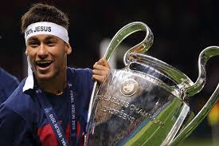

Neymar conquistou sua primeira e única Champions League pelo Barcelona na temporada 2014/15. Ele foi um dos protagonistas do título, marcando um gol na vitória por 3 a 1 sobre a Juventus na final, realizada em 6 de junho de 2015, em Berlim, terminando como um dos artilheiros da competição.
